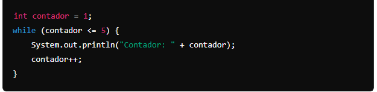

O loop 'while' é a estrutura de repetição mais simples. Ele continua a executar o bloco de código enquanto a condição especificada é verdadeira. Se a condição for falsa no inicio, o bloco de código nunca será executado. Sintaxe do loop while
Aqui está um diagrama do loop while

A segui exemplo do laço while.
Este laço é usado quando número iterações não conhecido e depende de uma condição que é avalida antes de cada iteração.
Funcionamento:
-
Verificação da Condição : A condição booleana dentro do parênteses é avaliada. - Execução do bloco de Código: Se a condição for verdadeira, o bloco de código dentro das chaves é executado.
- Reavaliação: Após a execução do bloco de código, a condição é reavaliada.
- Repetição ou Saída: Se a condição ainda for verdadeira, o bloco de código é executado novamente. Se a condição for falsa, o laço termina a a execução continua com o código que vem após o o laço 'while'.
Vantagens do laço 'while':
-
condição Avaliada antes da Execução: - No laço 'while', a condição é avalidada antes da execução do bloco de código. Isso seignifica que a se a condição for falsa deste o início, o bloco de código nunca será executado. Isso pode ser útil para evitar execuções desnecessárias ou incorretas quando uma condição inicial não satisfeita.
- Controle Preciso:
- Proporciona mais preciso e pode ser usado para validar a condição antes de qualquer operação, economizando tempo e recursos.
- Ideal para Laços com Condições Pré-definidas:
- É ideal quando precisamos executar um bloco de código repetidamente enquanto uma determinada condição permanece verdadeira, e essa condição pode ser falsa desde o ínicio.